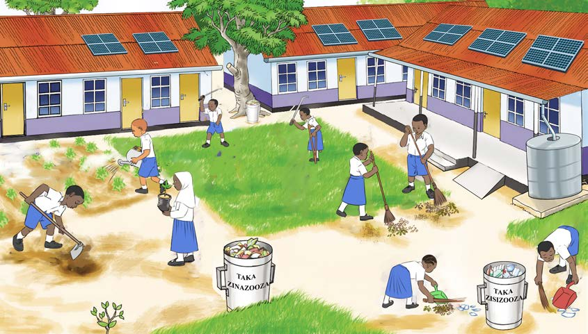

Kufanya shughuli za utunzaji wa mazingira ya shule
Kazi ya kufanya namba 7
Chunguza Kielelezo namba 3 kisha jibu maswali yafuatayo:

Kielelezo namba 3: Wanafunzi wakifanya shughuli za utunzaji wa mazingira ya shule
Maswali
1. Je, ni vifaa gani katika kielelezo namba 3, vinatumika kufanya usafi?
2. Bainisha kazi zinazofanywa na wanafunzi katika kielelezo namba 3.